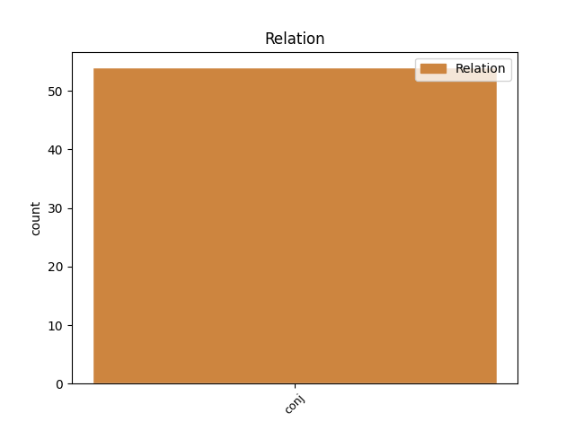
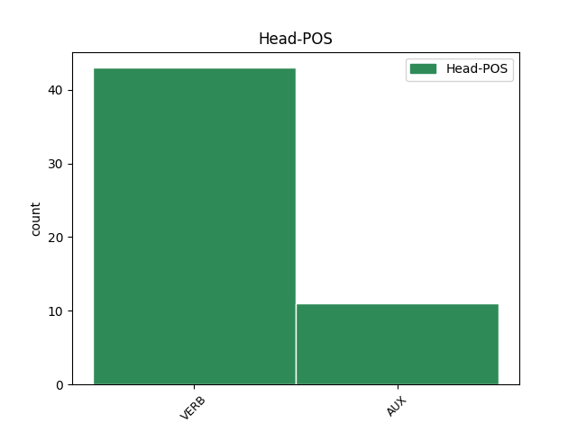
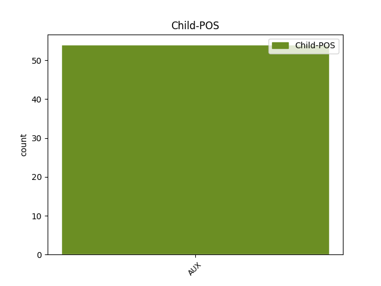

Distribution of features within this leaf



Agreement Rules sorted by frequency.
- When the dependent token is the conjunct(conj) of the head token, and the dependent token is AUX.
1 ה _ _ _ _ 0 _ _ _
2 שער _ _ _ _ 0 _ _ _
3 של _ _ _ _ 0 _ _ _
4 ויאלי _ _ _ _ 0 _ _ _
5 ש _ _ _ _ 0 _ _ _
6 נבע _ _ _ _ 0 _ _ _
7 מ _ _ _ _ 0 _ _ _
8 טעות _ _ _ _ 0 _ _ _
9 שוער _ _ _ _ 0 _ _ _
10 , _ _ _ _ 0 _ _ _
11 הובקע הובקע VERB VERB Gender=Masc|HebBinyan=HUFAL|Number=Sing|Person=3|Tense=Past|Voice=Pass 0 _ _ _
12 12 _ _ _ _ 0 _ _ _
13 דקות _ _ _ _ 0 _ _ _
14 אחר _ _ _ _ 0 _ _ _
15 - _ _ _ _ 0 _ _ _
16 כך _ _ _ _ 0 _ _ _
17 ו _ _ _ _ 0 _ _ _
18 ה _ _ _ _ 0 _ _ _
19 - _ _ _ _ 0 _ _ _
20 04 _ _ _ _ 0 _ _ _
21 היה _ AUX AUX Gender=Masc|Number=Sing|Person=3|Polarity=Pos|Tense=Past|VerbType=Cop 11 conj _ _
22 ב _ _ _ _ 0 _ _ _
23 בעיטת _ _ _ _ 0 _ _ _
24 11 _ _ _ _ 0 _ _ _
25 של _ _ _ _ 0 _ _ _
26 מארקו _ _ _ _ 0 _ _ _
27 בראנקה _ _ _ _ 0 _ _ _
28 . _ _ _ _ 0 _ _ _
Disagree Examples:
1 ה _ _ _ _ 0 _ _ _
2 אמריקאים _ _ _ _ 0 _ _ _
3 לא _ _ _ _ 0 _ _ _
4 יתנו _ VERB VERB Gender=Fem,Masc|Number=Plur|Person=3|Tense=Fut 0 _ _ _
5 זאת _ _ _ _ 0 _ _ _
6 , _ _ _ _ 0 _ _ _
7 ו _ _ _ _ 0 _ _ _
8 ה _ _ _ _ 0 _ _ _
9 מסר _ _ _ _ 0 _ _ _
10 ש _ _ _ _ 0 _ _ _
11 היה _ _ _ _ 0 _ _ _
12 ב _ _ _ _ 0 _ _ _
13 עמדת _ _ _ _ 0 _ _ _
14 ואשינגטון _ _ _ _ 0 _ _ _
15 ב _ _ _ _ 0 _ _ _
16 מועצת _ _ _ _ 0 _ _ _
17 ה _ _ _ _ 0 _ _ _
18 ביטחון _ _ _ _ 0 _ _ _
19 ו _ _ _ _ 0 _ _ _
20 ב _ _ _ _ 0 _ _ _
21 פרשת _ _ _ _ 0 _ _ _
22 ה _ _ _ _ 0 _ _ _
23 משלחת _ _ _ _ 0 _ _ _
24 ל _ _ _ _ 0 _ _ _
25 ה_ _ _ _ _ 0 _ _ _
26 שטחים _ _ _ _ 0 _ _ _
27 היה היה AUX AUX Gender=Masc|Number=Sing|Person=3|Polarity=Pos|Tense=Past|VerbType=Cop 4 conj _ _
28 ברור _ _ _ _ 0 _ _ _
29 מאוד _ _ _ _ 0 _ _ _
30 . _ _ _ _ 0 _ _ _
1 ב _ _ _ _ 0 _ _ _
2 ה_ _ _ _ _ 0 _ _ _
3 משרד _ _ _ _ 0 _ _ _
4 ל _ _ _ _ 0 _ _ _
5 איכות _ _ _ _ 0 _ _ _
6 ה _ _ _ _ 0 _ _ _
7 סביבה _ _ _ _ 0 _ _ _
8 התלוצצו התלוצץ VERB VERB Gender=Fem,Masc|HebBinyan=HITPAEL|Number=Plur|Person=3|Tense=Past 0 _ _ _
9 השבוע _ _ _ _ 0 _ _ _
10 ו _ _ _ _ 0 _ _ _
11 הציעו _ _ _ _ 0 _ _ _
12 ל _ _ _ _ 0 _ _ _
13 תמ"ס _ _ _ _ 0 _ _ _
14 להעביר _ _ _ _ 0 _ _ _
15 את _ _ _ _ 0 _ _ _
16 ה _ _ _ _ 0 _ _ _
17 מרכזייה _ _ _ _ 0 _ _ _
18 ל _ _ _ _ 0 _ _ _
19 ה_ _ _ _ _ 0 _ _ _
20 בניין _ _ _ _ 0 _ _ _
21 ה _ _ _ _ 0 _ _ _
22 חדש _ _ _ _ 0 _ _ _
23 , _ _ _ _ 0 _ _ _
24 " _ _ _ _ 0 _ _ _
25 ו _ _ _ _ 0 _ _ _
26 אנו _ _ _ _ 0 _ _ _
27 כבר _ _ _ _ 0 _ _ _
28 נוכל יכול AUX AUX Gender=Fem,Masc|Number=Plur|Person=1|Tense=Fut|VerbType=Mod 8 conj _ _
29 להסתדר _ _ _ _ 0 _ _ _
30 ב _ _ _ _ 0 _ _ _
31 כוחות _ _ _ _ 0 _ _ _
32 עצמנו _ _ _ _ 0 _ _ _
33 " _ _ _ _ 0 _ _ _
34 . _ _ _ _ 0 _ _ _
1 הוא _ _ _ _ 0 _ _ _
2 הסביר _ _ _ _ 0 _ _ _
3 כי _ _ _ _ 0 _ _ _
4 ב _ _ _ _ 0 _ _ _
5 מוצ"ש _ _ _ _ 0 _ _ _
6 יטוס טס VERB VERB Gender=Masc|HebBinyan=PAAL|Number=Sing|Person=3|Tense=Fut|Voice=Act 0 _ _ _
7 ל _ _ _ _ 0 _ _ _
8 חו"ל _ _ _ _ 0 _ _ _
9 ו _ _ _ _ 0 _ _ _
10 אינו _ _ _ _ 0 _ _ _
11 יכול יכול AUX AUX Gender=Masc|Number=Sing|Person=3|Tense=Past|VerbType=Mod 6 conj _ _
12 להופיע _ _ _ _ 0 _ _ _
13 בפני _ _ _ _ 0 _ _ _
14 מארח_ _ _ _ _ 0 _ _ _
15 _של_ _ _ _ _ 0 _ _ _
16 _הוא _ _ _ _ 0 _ _ _
17 בלי _ _ _ _ 0 _ _ _
18 החלטות _ _ _ _ 0 _ _ _
19 ש _ _ _ _ 0 _ _ _
20 יביאו _ _ _ _ 0 _ _ _
21 ל _ _ _ _ 0 _ _ _
22 יישום _ _ _ _ 0 _ _ _
23 תוכנית_ _ _ _ _ 0 _ _ _
24 _של_ _ _ _ _ 0 _ _ _
25 _הוא _ _ _ _ 0 _ _ _
26 ל _ _ _ _ 0 _ _ _
27 עידוד _ _ _ _ 0 _ _ _
28 השקעות _ _ _ _ 0 _ _ _
29 הון _ _ _ _ 0 _ _ _
30 . _ _ _ _ 0 _ _ _
1 ה _ _ _ _ 0 _ _ _
2 גירעון _ _ _ _ 0 _ _ _
3 ה _ _ _ _ 0 _ _ _
4 מקורי _ _ _ _ 0 _ _ _
5 ב _ _ _ _ 0 _ _ _
6 תקציב _ _ _ _ 0 _ _ _
7 ה _ _ _ _ 0 _ _ _
8 מדינה _ _ _ _ 0 _ _ _
9 היה _ _ _ _ 0 _ _ _
10 כ _ _ _ _ 0 _ _ _
11 6 _ _ _ _ 0 _ _ _
12 מיליארד _ _ _ _ 0 _ _ _
13 ש"ח _ _ _ _ 0 _ _ _
14 , _ _ _ _ 0 _ _ _
15 ו _ _ _ _ 0 _ _ _
16 עלה עלה VERB VERB Gender=Masc|HebBinyan=PAAL|Number=Sing|Person=3|Tense=Past|Voice=Act 0 _ _ _
17 ל _ _ _ _ 0 _ _ _
18 יותר _ _ _ _ 0 _ _ _
19 מ _ _ _ _ 0 _ _ _
20 01 _ _ _ _ 0 _ _ _
21 מיליארד _ _ _ _ 0 _ _ _
22 , _ _ _ _ 0 _ _ _
23 אולם _ _ _ _ 0 _ _ _
24 ל _ _ _ _ 0 _ _ _
25 דברי _ _ _ _ 0 _ _ _
26 מודעי _ _ _ _ 0 _ _ _
27 ה _ _ _ _ 0 _ _ _
28 חסם _ _ _ _ 0 _ _ _
29 ל _ _ _ _ 0 _ _ _
30 החמרת _ _ _ _ 0 _ _ _
31 ה _ _ _ _ 0 _ _ _
32 מצב _ _ _ _ 0 _ _ _
33 יהיה היה AUX AUX Gender=Masc|Number=Sing|Person=3|Polarity=Pos|Tense=Fut|VerbType=Cop 16 conj _ _
34 ה _ _ _ _ 0 _ _ _
35 יכולת _ _ _ _ 0 _ _ _
36 לגייס _ _ _ _ 0 _ _ _
37 הון _ _ _ _ 0 _ _ _
38 ב _ _ _ _ 0 _ _ _
39 חו"ל _ _ _ _ 0 _ _ _
40 . _ _ _ _ 0 _ _ _
1 " _ _ _ _ 0 _ _ _
2 נכון _ _ _ _ 0 _ _ _
3 ש _ _ _ _ 0 _ _ _
4 העונה _ _ _ _ 0 _ _ _
5 קבוצה _ _ _ _ 0 _ _ _
6 ש _ _ _ _ 0 _ _ _
7 תגיע _ _ _ _ 0 _ _ _
8 ל _ _ _ _ 0 _ _ _
9 ה_ _ _ _ _ 0 _ _ _
10 פיינל _ _ _ _ 0 _ _ _
11 - _ _ _ _ 0 _ _ _
12 פור _ _ _ _ 0 _ _ _
13 יהיו היה VERB VERB Gender=Fem,Masc|HebExistential=True|Number=Plur|Person=3|Polarity=Pos|Tense=Fut 0 _ _ _
14 ל_ _ _ _ _ 0 _ _ _
15 _היא _ _ _ _ 0 _ _ _
16 מינימום _ _ _ _ 0 _ _ _
17 24 _ _ _ _ 0 _ _ _
18 הפסדים _ _ _ _ 0 _ _ _
19 , _ _ _ _ 0 _ _ _
20 ו _ _ _ _ 0 _ _ _
21 זה _ _ _ _ 0 _ _ _
22 לא _ _ _ _ 0 _ _ _
23 היה היה AUX AUX Gender=Masc|Number=Sing|Person=3|Polarity=Pos|Tense=Past|VerbType=Cop 13 conj _ _
24 ב _ _ _ _ 0 _ _ _
25 ה_ _ _ _ _ 0 _ _ _
26 עבר _ _ _ _ 0 _ _ _
27 . _ _ _ _ 0 _ _ _